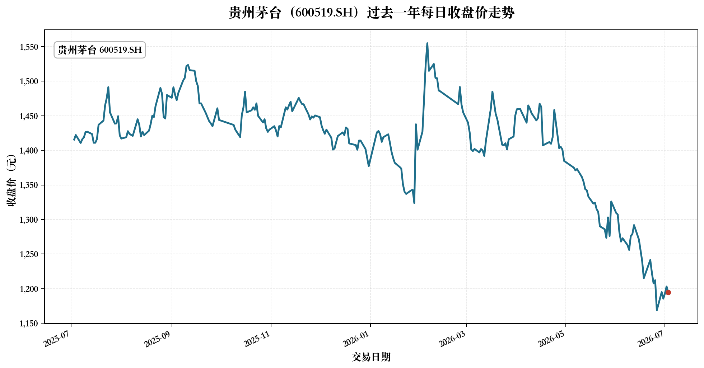

贵州茅台（600519.SH）量化交易数据引擎看板
基于过去一年日行情数据生成，用于展示数据获取、清洗、检查和可视化结果。
股票基本信息
股票名称贵州茅台
股票代码600519.SH
市场上海证券交易所 A 股主板
数据时间范围2025-07-03 至 2026-07-03
数据概览
总交易日数量
243
日行情记录
起始日期
2025-07-03
样本第一日
结束日期
2026-07-03
样本最后一日
最高收盘价
1555.00
2026-02-05
最低收盘价
1168.63
2026-06-26
平均收盘价
1411.02
按 243 个交易日计算
区间首日收盘价
1415.60
2025-07-03
区间末日收盘价
1194.45
区间变化 -15.62%
收盘价走势图

数据质量检查表
| 检查项目 | 结果 | 说明 |
|---|---|---|
| 数据行数是否合理 | 通过 | 243 行；行数大于 150，覆盖过去一年主要交易日，后续仍需结合停牌和节假日核查。 |
| 是否存在缺失值 | 通过 | 缺失值总数 0；若出现缺失，应追溯字段来源和接口返回，不应直接删除。 |
| 是否存在重复交易日期 | 通过 | 重复日期 0 个；重复日期可能来自重复抓取或合并错误，应先定位来源。 |
| 日期是否按升序排列 | 通过 | 已按交易日期升序排列；升序排列便于绘图、计算收益率和后续回测。 |
| OHLC 是否存在非正数 | 通过 | 非正价格 0 个；股票价格非正通常不合常识，若出现应核查复权、接口或数据类型。 |
| 成交量和成交额是否存在负数 | 通过 | 负数 0 个；负成交量或负成交额通常表示数据错误，应回查原始数据。 |
| OHLC 逻辑是否合理 | 通过 | 异常记录 0 行；异常是调查线索，不等于垃圾；应对照交易所或数据商记录核查。 |
简短中文分析
从过去一年收盘价走势看，贵州茅台在样本期内最高收盘价为 1555.00 元（2026-02-05），最低收盘价为 1168.63 元（2026-06-26）。样本期首日收盘价为 1415.60 元，末日收盘价为 1194.45 元，区间变化约为 -15.62%。这说明在本次样本范围内，价格中枢有所变化，但单个股票一年的行情不能单独作为交易决策依据，还需要结合市场环境、基本面变化、交易成本和风险控制规则。
本看板仅用于课程学习和数据分析，不构成投资建议。